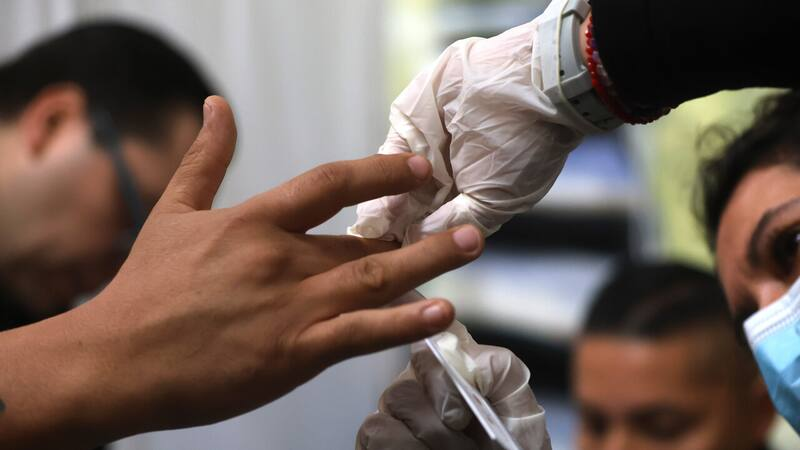

ANÁLISIS DE ALIMENTOS
Control microbiológico y fisicoquímico.
SERVICIOS PARA CENTROS
Alimentos preparados y agua potable.

Servicios BIOS
ANÁLISIS DE ALIMENTOS Y AGUA
Control microbiológico y fisicoquímico para establecimientos y servicios de alimentación.
SERVICIOS PARA CENTROS
Alimentos preparados en restaurantes
- Análisis microbiológicos
Ensaladas, jugos, quesos y leche en polvo
- Análisis microbiológicos
Agua potable
- Análisis microbiológicos
- Análisis físicos
- Análisis químicos